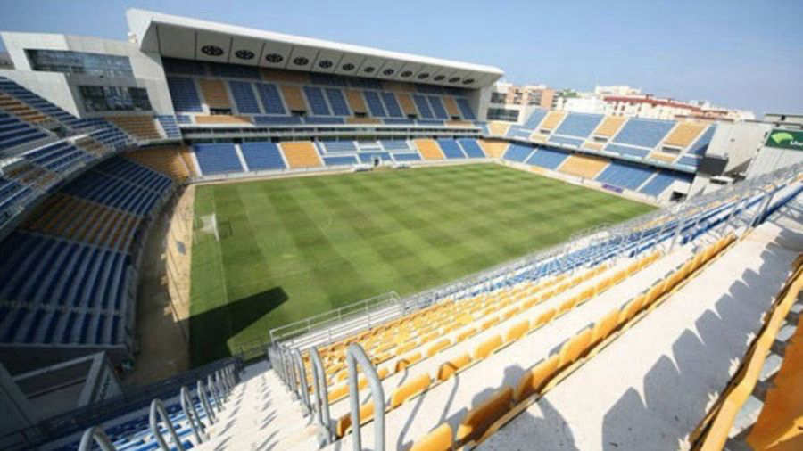

Al principio de la liga

La Primera División consta de un grupo único integrado por veinte equipos, pertenecientes a clubes de fútbol o sociedades anónimas deportivas (SAD). Siguiendo un sistema de liga, los veinte equipos se enfrentan todos contra todos en dos ocasiones una en campo propio y otra en campo contrario sumando un total de 38 jornadas. El orden de los encuentros se decide por sorteo antes de empezar la competición.
Fase Final

La clasificación final se establece con arreglo a los puntos totales obtenidos por cada equipo al finalizar el campeonato. Los equipos obtienen tres puntos por cada partido ganado, un punto por cada empate y ningún punto por los partidos perdidos.
Los ganadores

El equipo que más puntos sume al final del campeonato será proclamado campeón de Liga y obtendrá el derecho automático a participar en la fase de grupos de la siguiente edición de la Liga de Campeones de la UEFA, junto con el subcampeón, el tercer clasificado y el cuarto clasificado.50 El quinto clasificado obtendrá el derecho a participar en la ronda de play-off de la próxima Liga Europa de la UEFA y, el sexto, en la tercera eliminatoria de la misma.51 Si en la Copa del Rey el campeón está entre los seis mejores clasificados, el séptimo clasificado obtendrá el derecho a jugar la tercera ronda previa de la siguiente edición de la Liga Europa. Además, el campeón y el subcampeón disputan la Supercopa de España, enfrentándose al los finalistas de la Copa del Rey de esa misma temporada.